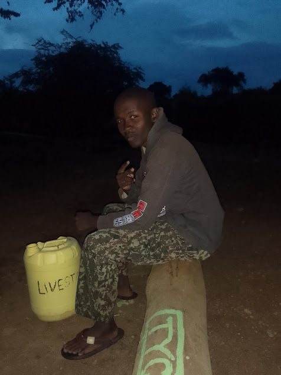

About Me

Hi, I'm Craig Njama, a creative professional dedicated to delivering excellence across multiple disciplines.
With expertise in computer hardware and software repair, I ensure systems run smoothly and efficiently. My passion for 3D graphics allows me to bring imaginative visions to life through digital art and design.
As a skilled video editor, I transform raw footage into compelling visual stories that engage and inspire audiences.
I'm driven by solving technical challenges and creating digital content that makes an impact.